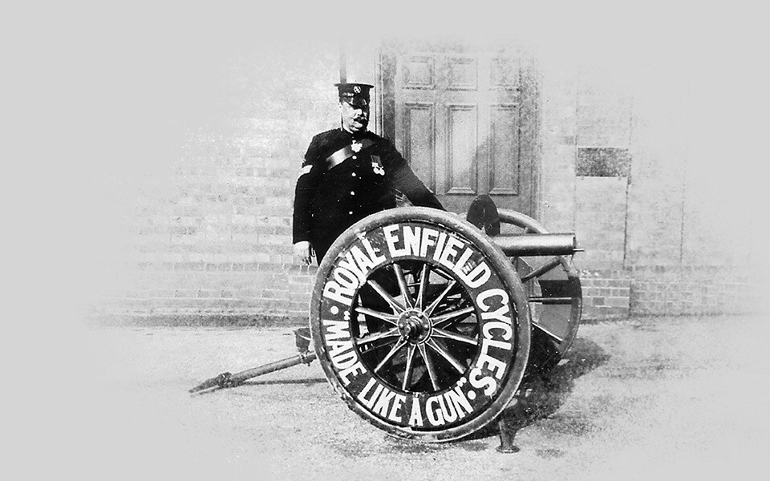
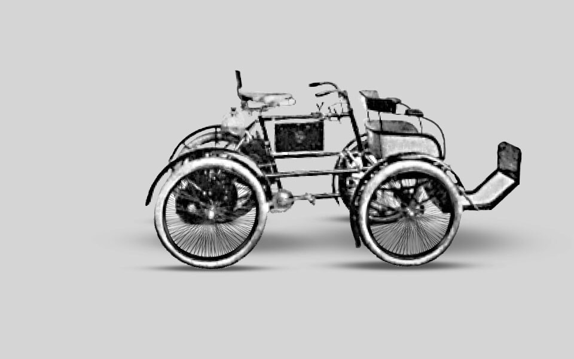
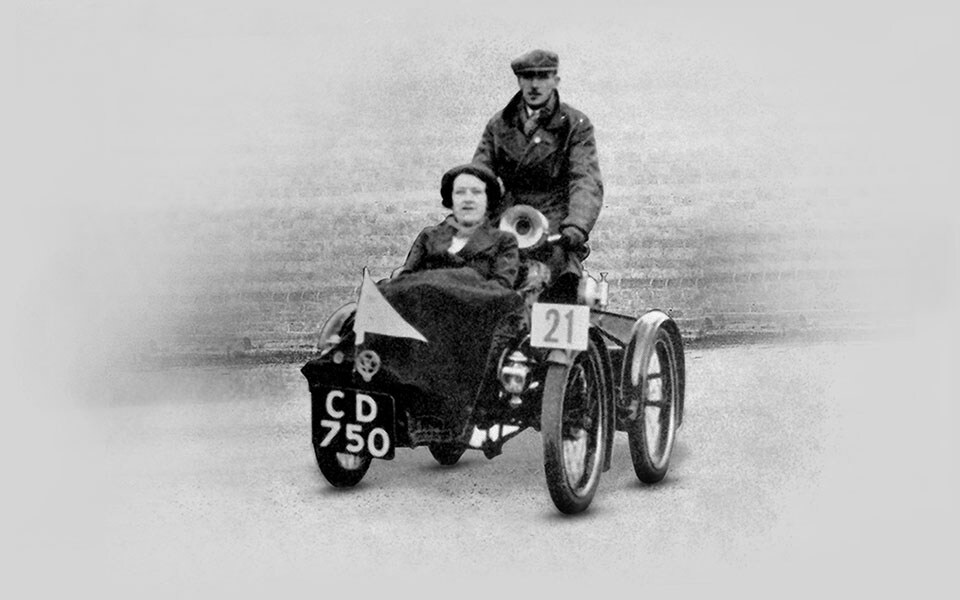

1891
In November 1891, entrepreneurs Bob Walker Smith and Albert Eadie buy George Townsend & Co. of Hunt End, Redditch. Townsend’s is a well-respected needle manufacturer of almost 50 years standing which has recently begun manufacturing bicycles.
1893
The duo win a contract to supply precision parts to the Royal Small Arms Factory of Enfield, Middlesex. To celebrate this prestigious order, they rename their undertaking the Enfield Manufacturing Company Ltd. and call their first Bob Walker Smith designed bicycle, the Enfield. The following year, their bicycles are renamed Royal Enfields and the trademark ‘Made Like A Gun’ is introduced.

1898
Bob Walker Smith designs the company’s first motorised vehicle. Known as a quadricycle, it is built around two sturdy bicycle frames and uses a proprietary 1 1/2 hp De Dion engine. The company finalises its trading name as The Enfield Cycle Co. Ltd., a name it is to use for the following 70 years.
1900
Royal Enfield delves into motorsport when one of its quadricycles enters the inaugural 1000 Mile Trial. Following a torturous cross-country route from London to Edinburgh and back, the event does much to convince the British public of the viability of motorised transport.